A gentle, step-by-step gardening guide crafted for elders — grow, nurture, and enjoy nature at your own pace.
🌱 For seniors & caregivers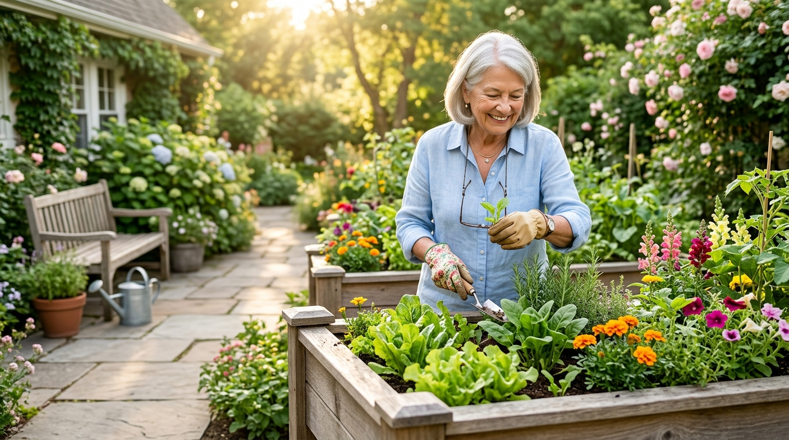
Gardening keeps you active, brings fresh air, and calms the mind. This guide uses simple steps, safe practices, and plants that are easy to grow and maintain.
Whether you have a quiet backyard patch, a sunny balcony, or a kitchen windowsill, you can enjoy the therapeutic joy of nurturing living plants.
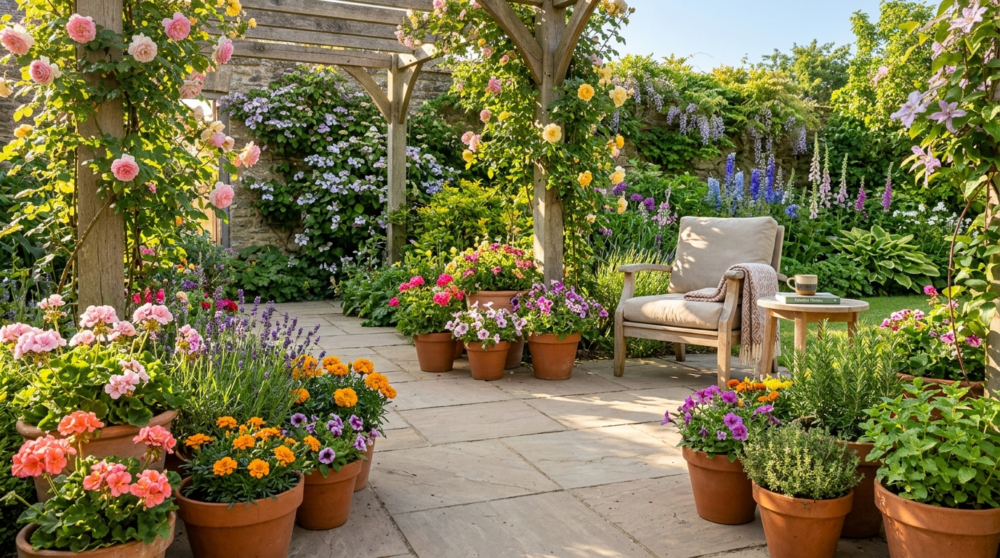
Most plants thrive with 6–8 hours of sun. Pick an accessible spot you can reach easily without bending or stretching.
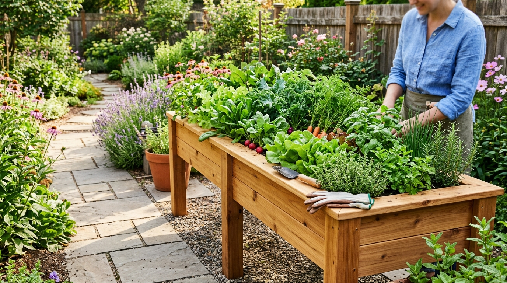
Raised beds and waist-high containers prevent bending. Place pots on sturdy tables or railings for effortless balcony gardening.
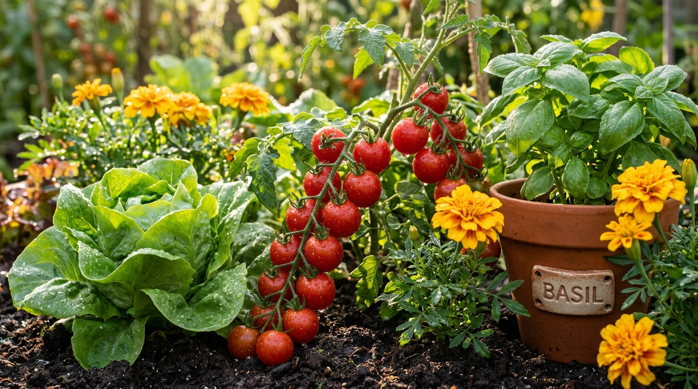
Begin with 2–3 easy-care plants. A small, well-tended garden brings everyday joy without feeling overwhelming.
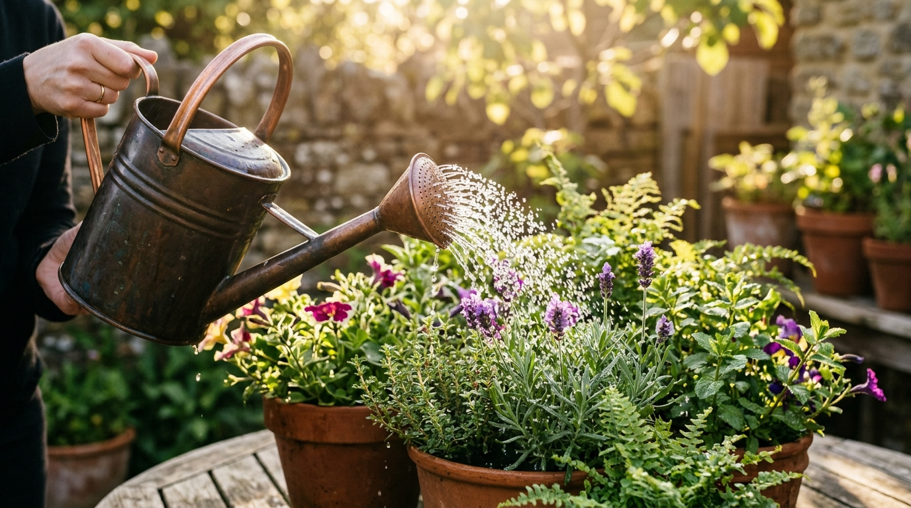
Water gently in the mornings so leaves dry before dusk. Check the soil an inch down — if it feels dry, give it a drink.
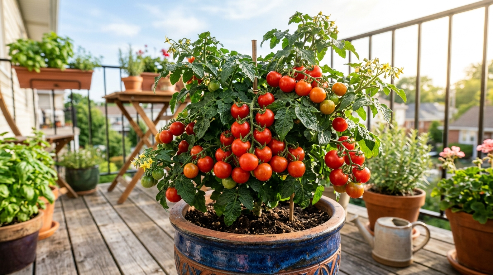
Dwarf or cherry varieties in containers with a sturdy cage. Easy to reach, heavy producers, and delicious fresh off the vine.
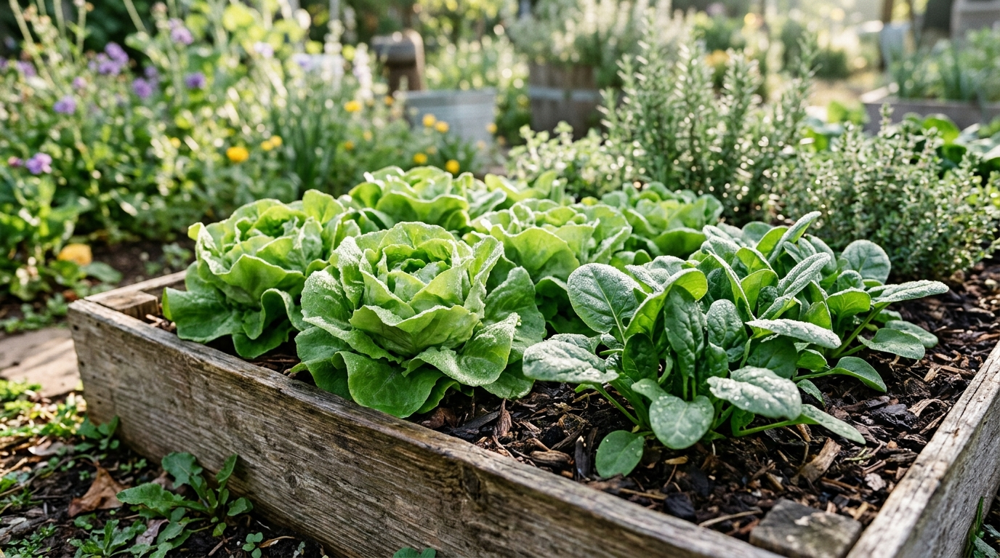
Fast-growing greens with shallow root systems. Perfect for shallow containers and ready to harvest in just a few weeks.
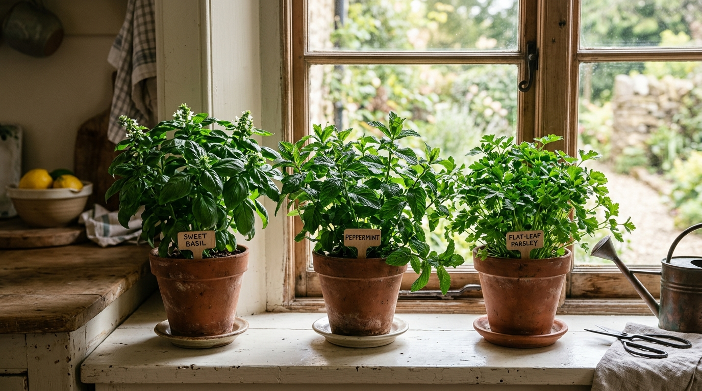
Basil, mint, chives, and parsley thrive in compact pots on a sunny windowsill or tabletop, providing fresh flavor daily.
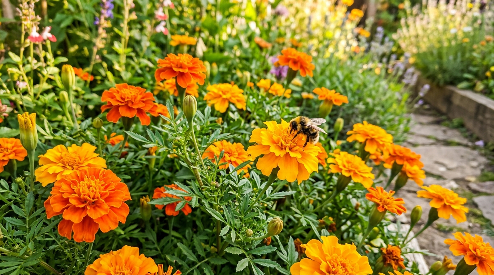
Bright, cheerful flowers requiring minimal fuss. They deter common garden pests while welcoming gentle pollinators.
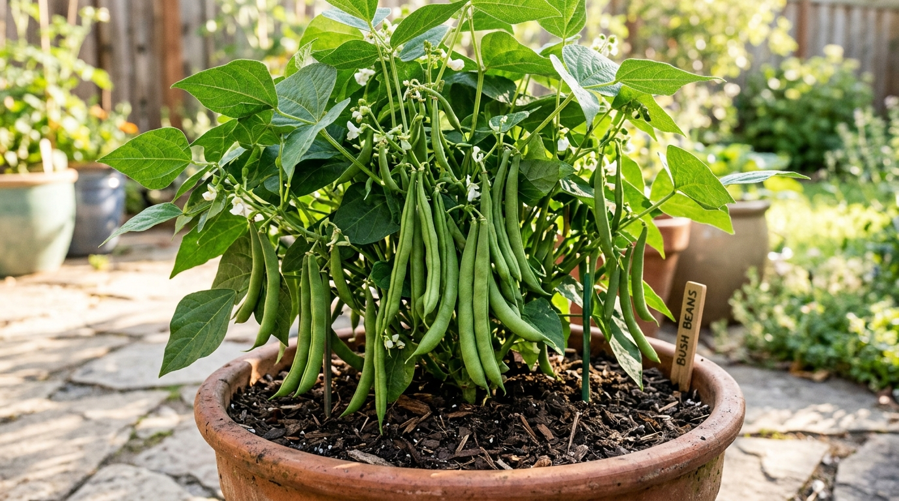
Bush bean varieties require zero staking or trellises, grow compactly, and yield tender pods that are quick and easy to pick.
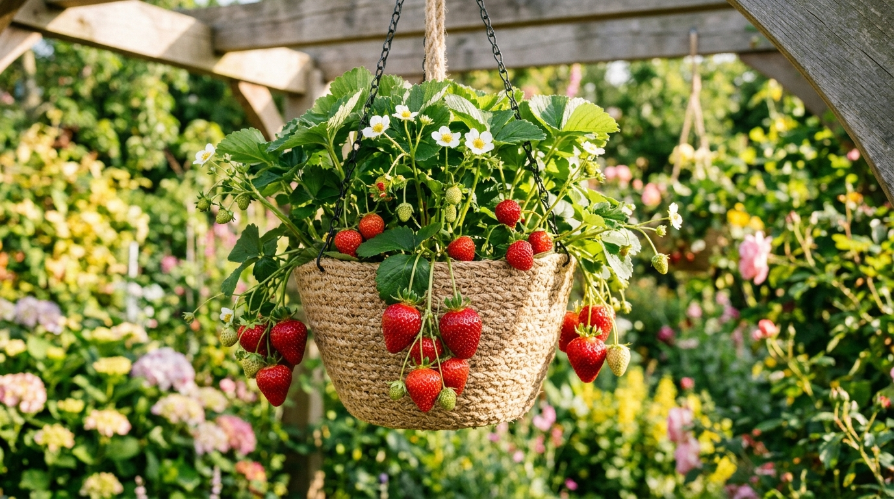
Plant in hanging baskets or raised towers — berries dangle cleanly at eye level, saving your back from any bending.
Wear fitted gloves to protect hands and grip easily.
Use long-handled & lightweight tools.
Take restful breaks every 20–30 minutes.
Keep a mobile phone within arm's reach.
Wear a sun hat and avoid midday peak heat.
Store tools in organized, visible holders.
Soft contoured grip and angled handle reduces wrist strain during planting.
Dual-purpose kneeler flips into a sturdy seat with side handles that assist standing.
Balanced, dual-handle design makes lifting and pouring comfortable even when full.
Leverage-action claw extracts taproot weeds effortlessly without any bending.